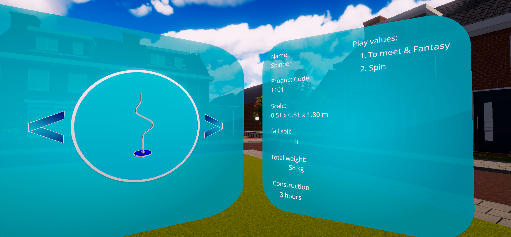
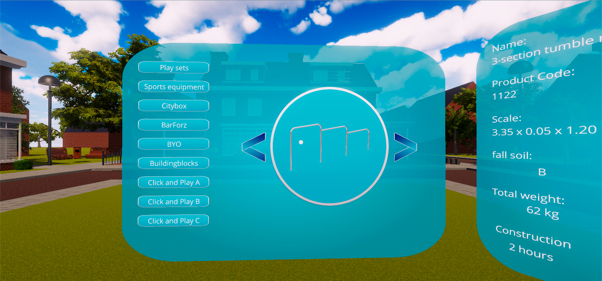

The project itself
IJslander is a Dutch company which makes equipment for playgrounds. They asked my team and me to create a VR application to show off their equipment.
All playground equipment is property of IJslander B.V.
My contribution to the project
The following points are the systems that I've created while working on this project. A more in-depth explanation is written further below.
- Object placing system
- Object information system
- Catalogue system
- Coloring system
- Serialization system
- Localization system
Object placing system
Every object of the playground equipment has a fall zone. This fall zone has to be entirely on the playground and cannot intersect with other objects or their fall zones.
I used Unity primitves with a trigger collider as the fall zones. I placed an empty GameObject at every corner of the fall zone. All those objects shoot a raycast down. And only when all the raycasts hit the playground, the object will be fully on the field. And so the first boolean will be set to true.
The aforementioned trigger collider is used to detect if an object or its fall zone is intersecting ours. If that is not the case, the second boolean will be set to true. If both booleans are true, then the object can be placed and the fall zone will turn from red to green.

Object information system
Every object needs to have a component containing information about that object. For example: its name, product code, dimensions or weight.
This is a small script containing all variables with information about the object in question. This information is placed on the Catalogue's User Interface to help choose which object to place on your playground.
Catalogue system
Boiled down to the basics, the Catalogue is a big list of prefabs divided into a couple of subgroups. It accesses the Object Information component on the prefab and displays this information on the UI. There's also a thumbnail shown of the prefab you are currently looking at. When you press this thumbnail, the 3D model will appear and you can place it using the Object Placing system.
Coloring system
Some objects have pieces of their mesh that can be colored. When the object is instantiated, it gets an instance of the prefab's original material. So only that object's color changes, and not the prefab itself.
There is only a limited amount of colors that IJslander can put on their equipment. These colors are stored on a ScriptableObject, which is more efficient than manually setting the color options on every object.

Serialization system
On every playground (there are three: 10x10, 20x20 and 30x30) there is an option to save the layout you've made.
The serializable data for an object is held by a script named 'SerializableObjectData'. When the save button is pressed, an instance of this script is created for every placed object. This contains the object's position, rotation the color of its materials. All these instances are then placed into an array and serialized by the DataManager using a binary formatter. The files are saved in their own folder in Unity's persistent datapath under a name of your own choosing.

Localization system
IJslander has international exhibitions and so they wanted a system to change the language of the application. I did this by giving every translatable text a script with a key. Then I serialized it to a JSON file. I chose JSON because it has to be readable to translate it. So this file contains a key and a value for every piece of text that has to be translated. When the application starts the appropriate language file is loaded into a Dictionary. Now when a piece of text needs translation, it can search its key in the Dictionary and use the matching value.